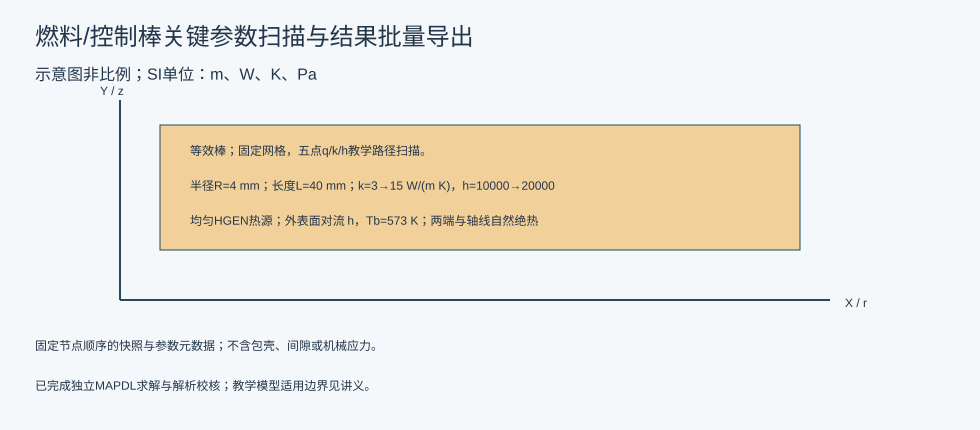
燃料/控制棒关键参数扫描与结果批量导出
本次隔离MAPDL求解返回0，无求解错误。验证表为5行8列，空间快照为729行8列，节点编号/坐标唯一且固定；逐工况温度场、轴向均匀性和外壁边界均已核对。最大中心温升相对解析误差 0.9157%，求解器保留精度下最大整体热平衡误差 1.14e-14。CSV温度输出有限小数位，重新用CSV算热平衡时应允许舍入误差。
开始学习 →
燃料棒与控制棒案例的网格独立性自动循环
本次隔离MAPDL实际完成两种材料各三网格求解，返回0，无求解错误；CSV为6行9列。误差随加密单调减小。
开始学习 →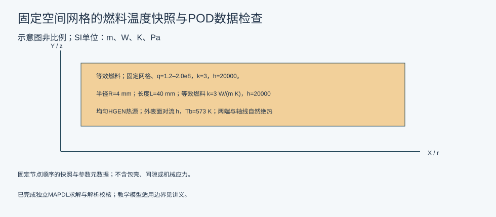
固定空间网格的燃料温度快照与POD数据检查
本次隔离MAPDL求解返回0，无求解错误。验证表为5行8列，空间快照为729行8列，节点编号/坐标唯一且固定；逐工况温度场、轴向均匀性和外壁边界均已核对。最大中心温升相对解析误差 0.9796%，求解器保留精度下最大整体热平衡误差 7.11e-15。CSV温度输出有限小数位，重新用CSV算热平衡时应允许舍入误差。
开始学习 →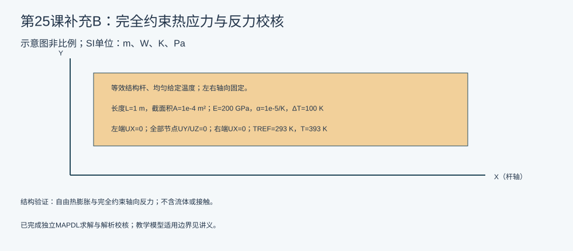
第25课补充B：完全约束热应力与反力校核
本次MAPDL隔离求解返回0，无求解错误。右端轴向位移 0 m、左端反力 20000 N、轴向应力 -200 MPa，与常物性线性杆解析解一致。模型为两单元三节点；固定横向机构，保留内部轴向自由度。该校核只覆盖轴向热膨胀/约束，不验证弯曲、接触或真实燃料寿命。
开始学习 →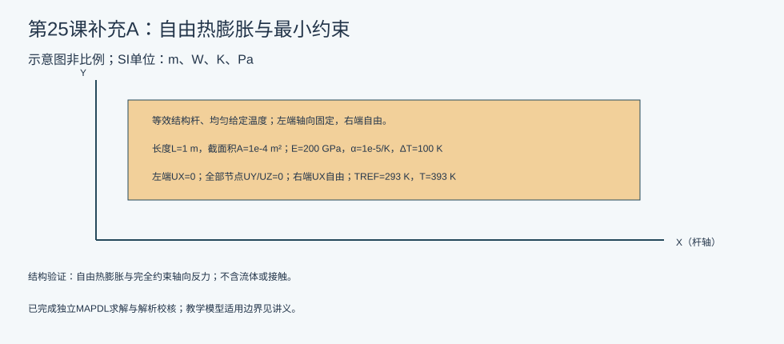
第25课补充A：自由热膨胀与最小约束
本次MAPDL隔离求解返回0，无求解错误。右端轴向位移 0.001 m、左端反力 0 N、轴向应力 0 MPa，与常物性线性杆解析解一致。模型为两单元三节点；固定横向机构，保留内部轴向自由度。该校核只覆盖轴向热膨胀/约束，不验证弯曲、接触或真实燃料寿命。
开始学习 →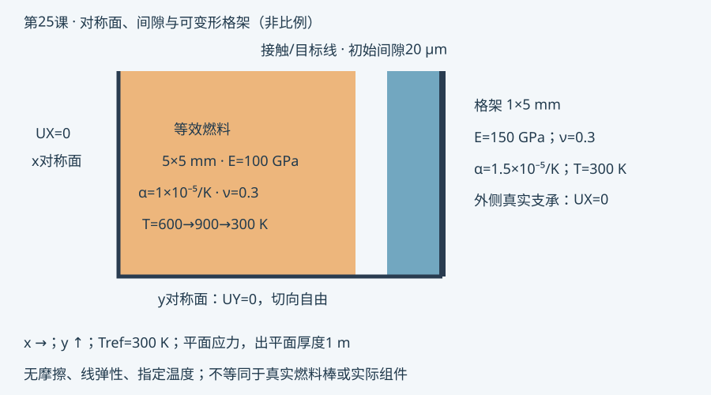
燃料组件中的接触、对称性和约束选择
MAPDL隔离执行：四个算例均0错误；基线开口/闭合/卸载间距[4.97747739354, -0.00442252873276, 20.0] μm，闭合最大元素平均压力192.664 MPa；相对反力不平衡1.45e-07。刚度0.5/2与网格0.25 mm的压力变化约−2.65%/+3.00%/+3.65%，未声称网格独立或工程认证。仍有接触刚度过大及初始开口警告。
开始学习 →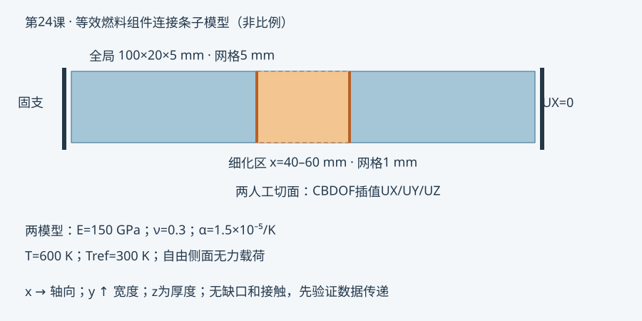
子模型法评估燃料组件局部热应力
隔离MAPDL 2023 R1执行成功；全局及子模型均收敛，0错误、0警告，CBDOF生成真实切边约束。全局中央σx=-688.430112 MPa，子模型=-688.413088 MPa，差异0.0025%；子模型2000单元。与理想单轴−675 MPa存在约2%端部三维约束偏差，不冒充解析完全吻合。尚未做网格/切边距离研究，也未包含缺口或非线性材料。
开始学习 →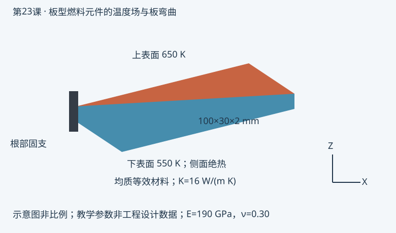
板型燃料元件的温度场与板弯曲
Ansys MAPDL 2023 R1在本课validation隔离目录完成求解，返回码0、错误0。教学结果并非工程安全验证；尚未完成网格独立性及实测对照。热结果温度范围550.0–650.0 K；Z位移范围-2.7489–0.0010 mm。结构子步收敛。存在1条ETCHG标准转换提醒，已核对转换为SOLID185、材料、温度传递和结构约束；未消除根部约束敏感性。
开始学习 →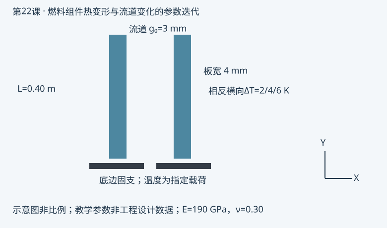
燃料组件热变形与流道变化的参数迭代
Ansys MAPDL 2023 R1在本课validation隔离目录完成求解，返回码0、错误0。教学结果并非工程安全验证；尚未完成网格独立性及实测对照。跨板温差2、4、6 K时，最小流道宽度分别为2.7095, 2.4189, 2.1284 mm。无警告；仍是指定温度的小变形模型。
开始学习 →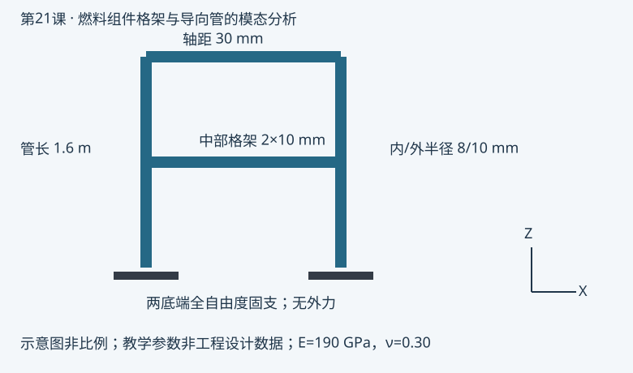
燃料组件格架与导向管的模态分析
Ansys MAPDL 2023 R1在本课validation隔离目录完成求解，返回码0、错误0。教学结果并非工程安全验证；尚未完成网格独立性及实测对照。本次六阶频率为6.8808, 12.2064, 43.0076, 50.4544, 86.0201, 104.8618 Hz。无警告。
开始学习 →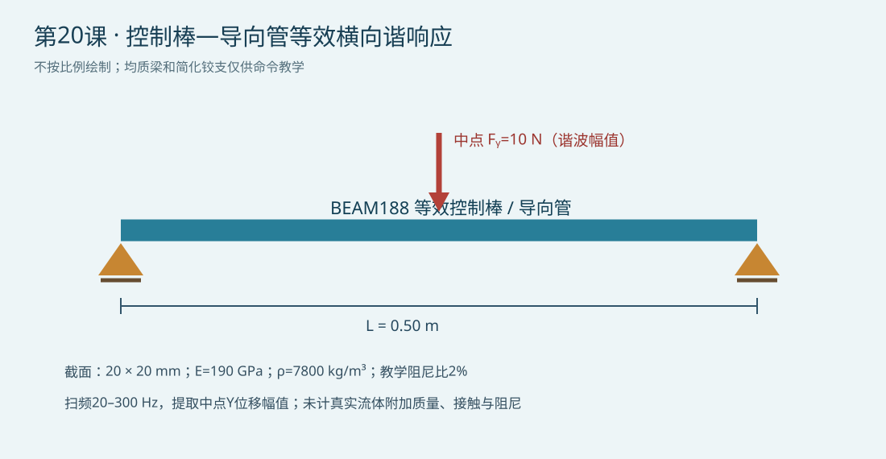
控制棒与导向管的谐响应及流致振动等效载荷
脚本、单位、注释、SVG及Ansys命令参考已静态检查；隔离MAPDL求解尝试在获取许可证前停止（1055@localhost，FlexNet -97,121），未得到数值结果。
开始学习 →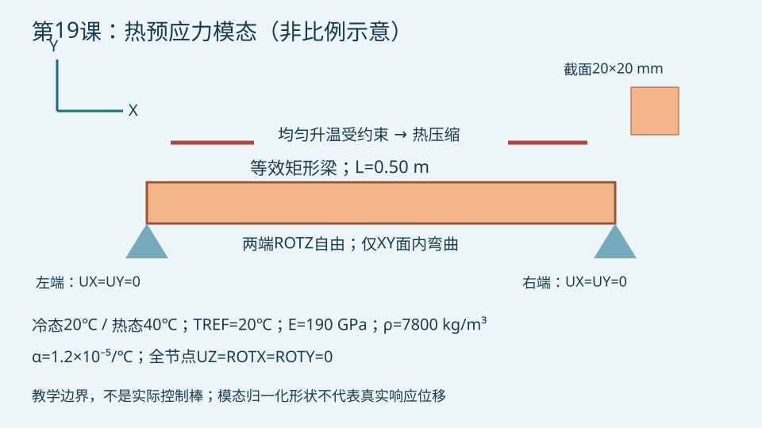
控制棒组件的热预应力模态分析
MAPDL 2023 R1在隔离目录完成40/80单元和零温升三组求解；均0错误、0警告，反力平衡及Euler梁解析对照通过。
开始学习 →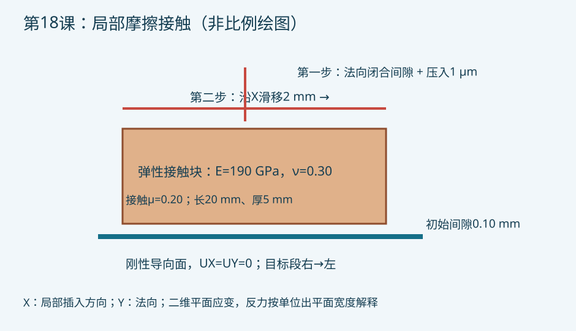
控制棒插入/提出的摩擦接触简化模型
MAPDL 2023 R1 在隔离目录完成基线、无摩擦和细网格三组求解，均0错误；基线反力比0.1999949，无摩擦切向反力接近零。细网格切向反力增加约2.98%，且出现接触刚度警告，尚未证明完全网格收敛。详见教程和verification日志。
开始学习 →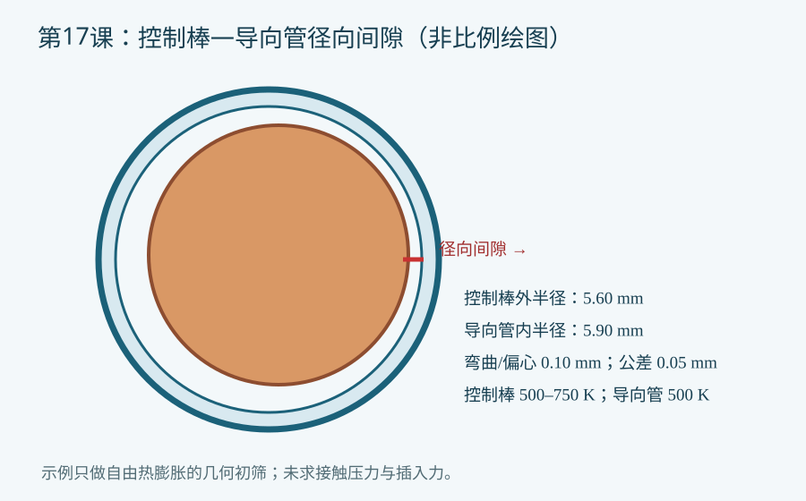
控制棒—导向管间隙、接触与卡涩裕量：几何初筛
已静态检查脚本、单位和注释；本机未运行 MAPDL。第17课为几何风险初筛，不是接触有限元验证。
开始学习 →
控制棒包壳的热膨胀、热应力与内压组合载荷
已静态检查脚本、单位和注释；本机未运行 MAPDL。第17课为几何风险初筛，不是接触有限元验证。
开始学习 →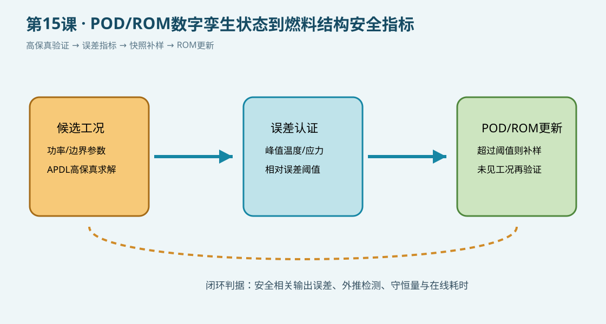
POD/ROM数字孪生状态到燃料结构安全指标
已静态核对SI单位、轴对称热分析流程、误差阈值判断、POD补样逻辑和每条可执行命令的中文行尾注释；本机未运行MAPDL，tref仅为教学参考参数。
开始学习 →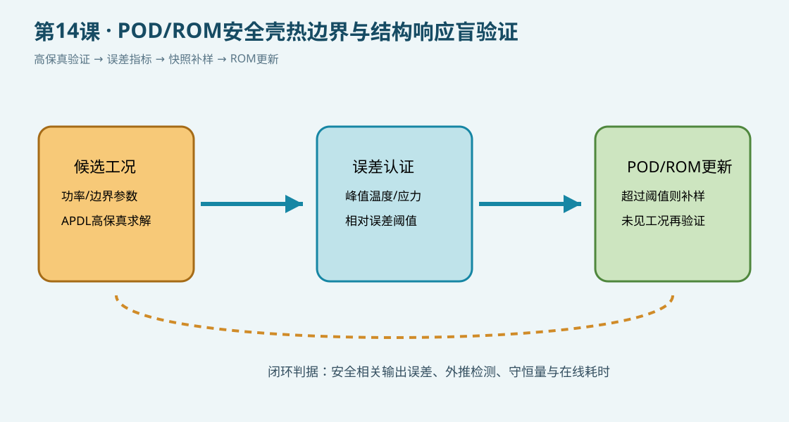
POD/ROM安全壳热边界与结构响应盲验证
已静态核对SI单位、轴对称热分析流程、误差阈值判断、POD补样逻辑和每条可执行命令的中文行尾注释；本机未运行MAPDL，tref仅为教学参考参数。
开始学习 →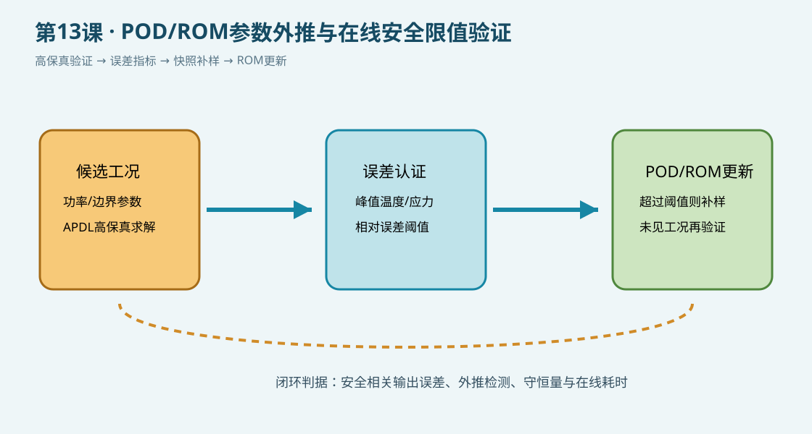
POD/ROM参数外推与在线安全限值验证
已静态核对SI单位、轴对称热分析流程、误差阈值判断、POD补样逻辑和每条可执行命令的中文行尾注释；本机未运行MAPDL，tref仅为教学参考参数。
开始学习 →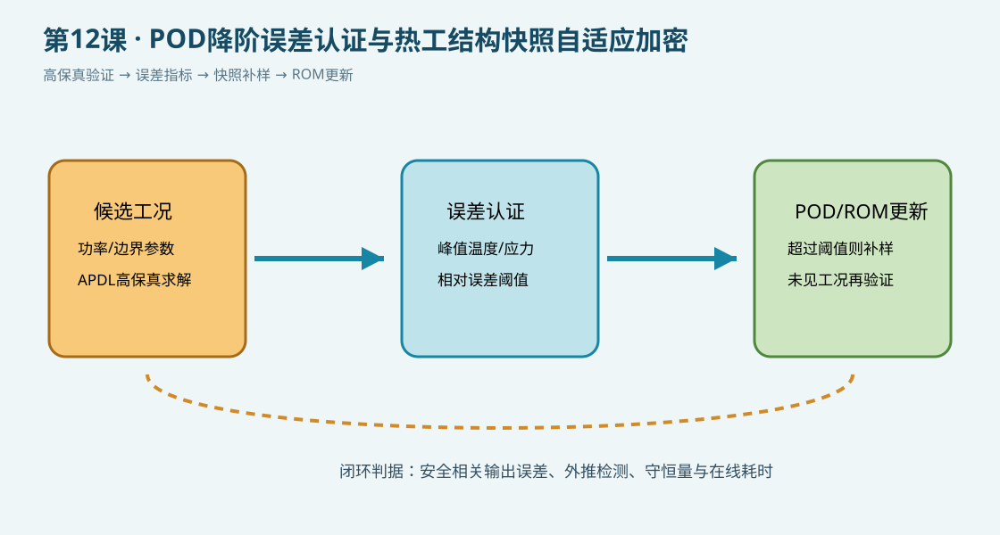
POD降阶误差认证与热工结构快照自适应加密
已静态核对SI单位、轴对称热分析流程、误差阈值判断、POD补样逻辑和每条可执行命令的中文行尾注释；本机未运行MAPDL，tref仅为教学参考参数。
开始学习 →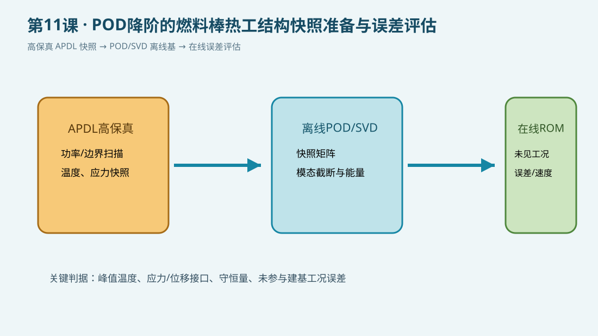
POD降阶的燃料棒热工结构快照准备与误差评估
已静态核对SI单位、轴对称热分析流程、五工况快照输出和每条可执行命令的中文行尾注释；POD/SVD在外部后处理中完成，本机未运行MAPDL。
开始学习 →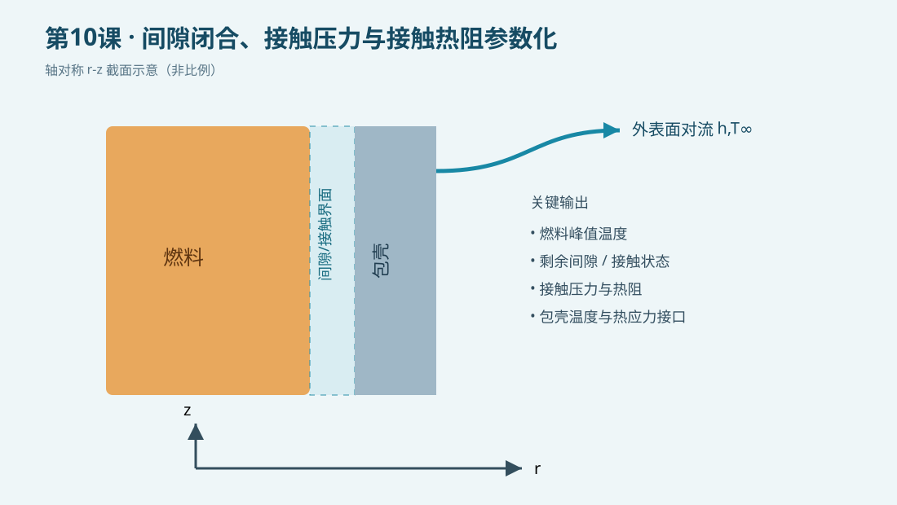
间隙闭合、接触压力与接触热阻参数化
已静态核对SI单位、轴对称热分析流程和每条可执行命令的中文行尾注释；本机未运行MAPDL，接触状态采用教学用等效间隙层/罚刚度参数化，不声称替代核级接触本构。
开始学习 →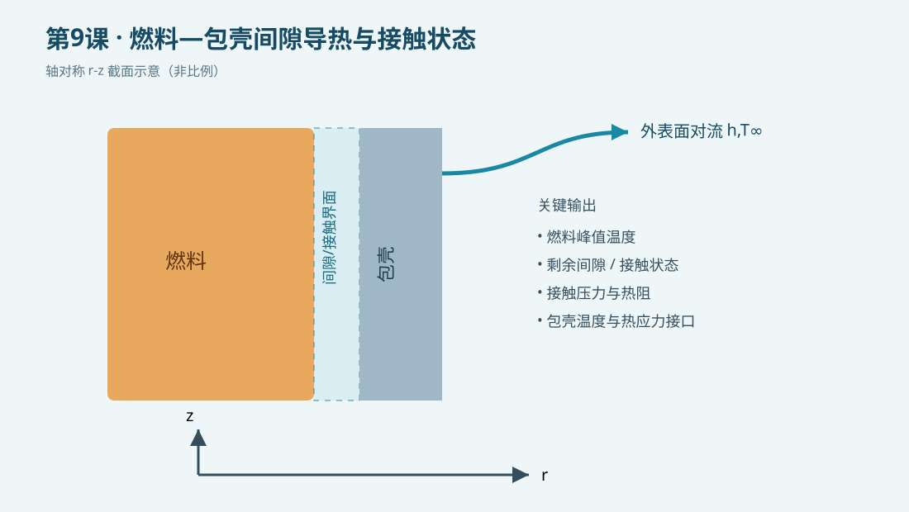
燃料—包壳间隙导热与接触状态
已静态核对SI单位、轴对称热分析流程和每条可执行命令的中文行尾注释；本机未运行MAPDL，接触状态采用教学用等效间隙层/罚刚度参数化，不声称替代核级接触本构。
开始学习 →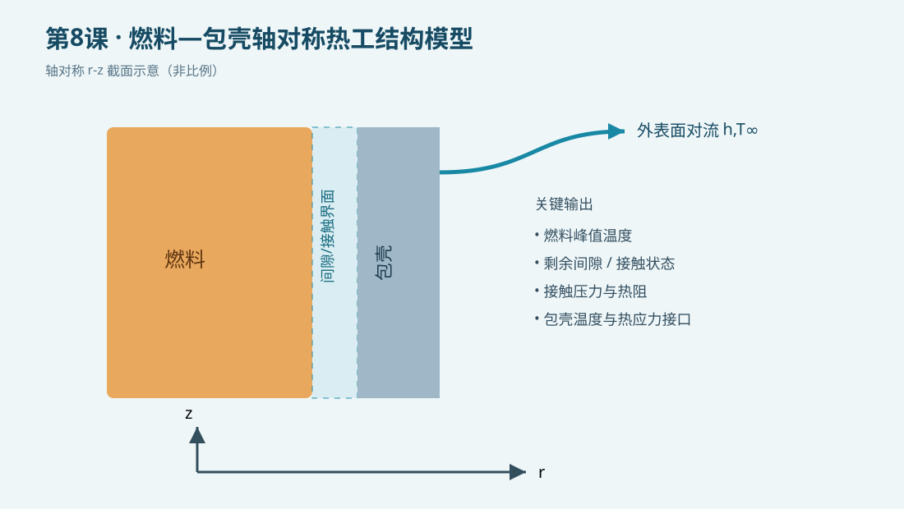
燃料—包壳轴对称热工结构模型
已静态核对SI单位、轴对称热分析流程和每条可执行命令的中文行尾注释；本机未运行MAPDL，接触状态采用教学用等效间隙层/罚刚度参数化，不声称替代核级接触本构。
开始学习 →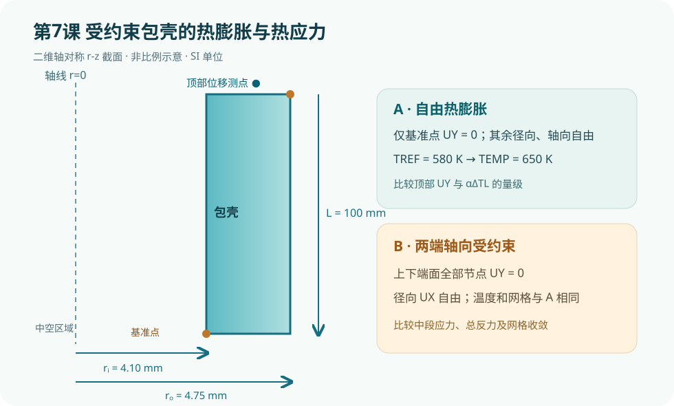
受约束包壳的热膨胀与热应力
已按 Ansys 2026 R1 官方 PLANE182、BFUNIF、DDELE 文档静态核对轴对称选项、温度载荷与边界切换；已核对 SI 单位和每条可执行命令的行尾中文注释。本机未运行 MAPDL，故不提供计算数值。
开始学习 →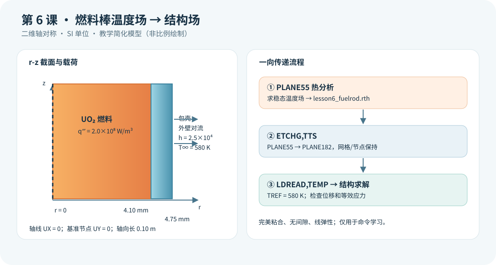
燃料温度场向包壳结构场传递
依据 Ansys 2026 R1 验证例 VM32 和官方 ETCHG、LDREAD、PLANE55/182 命令说明核对单元转换、温度读取与轴对称选项；已检查每条可执行命令行尾注释和 SI 单位。未运行 MAPDL，故无计算结果数值。
开始学习 →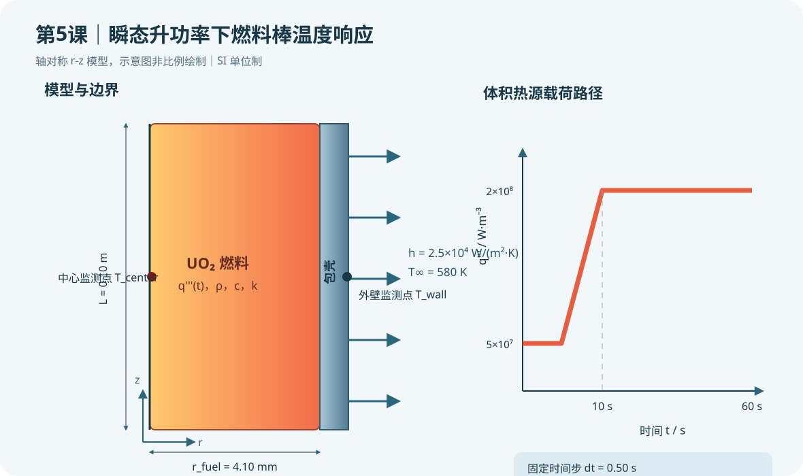
瞬态升功率下的燃料棒温度响应与时间步控制
已完成 APDL 命令结构、SI 单位、初始稳态、固定时间步、热源更新、结果时程和行尾中文注释的静态检查；未启动 MAPDL。材料和边界数值仅用于教学。
开始学习 →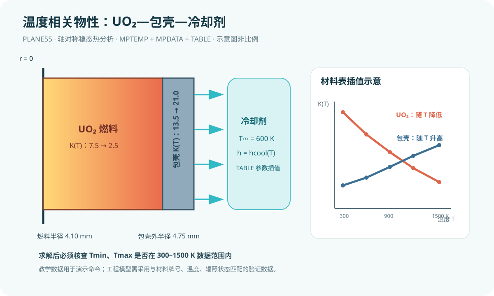
UO₂、包壳与冷却剂的温度相关材料属性
已完成命令结构、材料温度点对应、选择集、载荷和 SI 单位一致性静态检查；未启动 MAPDL。材料数值仅用于教学。
开始学习 →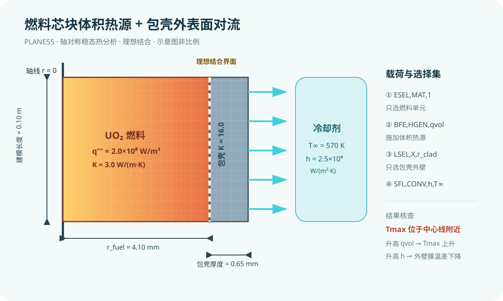
燃料芯块体积热源与包壳外表面对流
已完成命令结构、材料选择、热源选择、外壁对流选择及 SI 单位一致性静态检查；未启动 MAPDL。
开始学习 →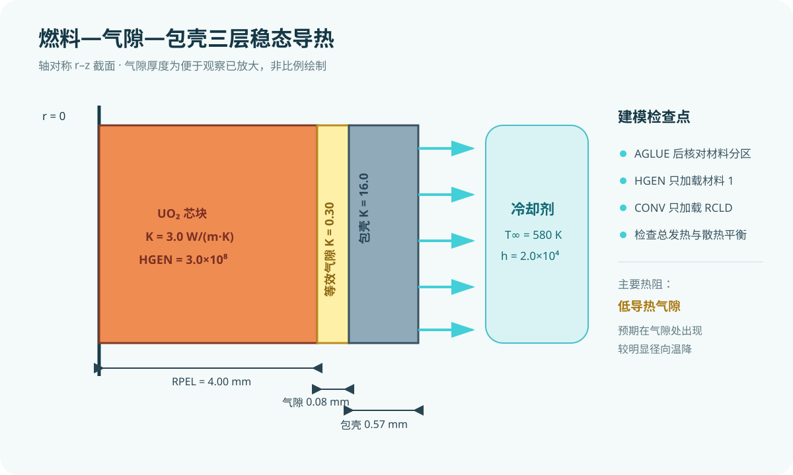
一维燃料棒稳态径向导热：芯块、等效气隙与包壳
已完成 APDL 命令分段、材料选择、边界选择及 SI 单位一致性静态检查；未启动 MAPDL。
开始学习 →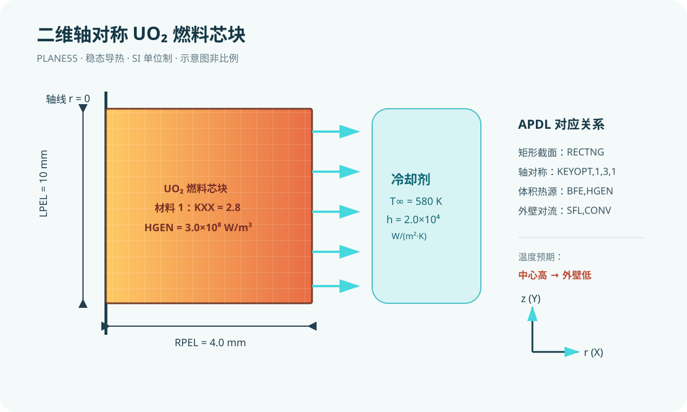
APDL 基本结构、单位制与参数化：燃料芯块稳态导热起步
本次未启动 MAPDL；已按 APDL 命令分段和 SI 单位一致性进行静态检查。
开始学习 →